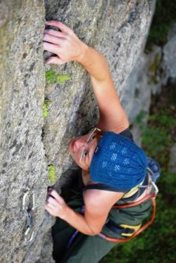
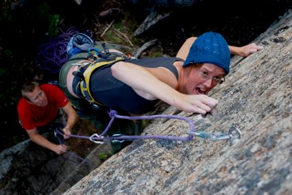

Nolby
Allmänt
Liten sportklippa vid Nolbybacken. Lederna här är ganska korta men håller ändå ganska hög klass.
Vägbeskrivning
Från Sundsvall:
Följ E4:an söderut till Kvissleby. Sväng av åt höger, skyltat
Nolbykullen
. Ta sedan direkt vänster, dvs
ej
mot Nolbybacken.
Ta sedan höger på
Nyavägen
. Sväng sedan höger igen på
Trastvägen
. Parkera på grusvägen 50m innan bommen.
Promenera vidare längs vägen. 20 meter efter en blå container så finns en stig som går upp åt höger. Följ den 50m så är ni vid klippan.
Miljö
Huvudsaklingen nordvänd kompakt klippa. Skogen är ganska gles vid klippan, så den torkar ganska snabbt.
Leder

Projekt A-väggen

Den första väggen som man kommer upp till från stigen.
-
- Creation of the imagination
- 7c
- Överhangande klättring med mycket undercling och sidepull.
-
- Projekt A
- 6c+
- Följer borrbultslinjen snett upp åt höger. Amerikaankare.
-
- Torsk i tallen
- 6c
- Gemensamt ankare med '''Bängel'''.
-
- Bängel
- 7a
- Gemensamt ankare med '''Torsk i tallen'''.
-
- Senslessness
- 7c
- Går till toppen. Delikat och varierande klättring.
-
- Crazy frog
- 6a
- Startkrux. Ankare.
-
- Painkiller
- 7c
- Kruxklättring längs arete'.
Hårdrocksväggen
Nästa vägg till höger om
Projekt A-väggen
.
-
- Slaugterhouse
- 6b
- Samma insteg som '''Fear of the dark'''. Efter 2 BB traverserar man vänster. Ankare.
-
- Fear of the dark
- 7a
- Rakt upp. Ankare.
-
- Night comes down
- 6a+
- Stora grepp och brant för graden. Ankare.
-
- Speak to me
- 5c
- Andra halvan går genom ett dieder. Gemensamt ankare med '''Night comes down'''.
-
- Paranoid
- 6c
- Brant på stora grepp. Ankare.
-
- I was made for loving you
- 6c
- Ankare.
Övreväggen, högra
Ligger ovanför
Projekt A-väggen
.
Senslessness
kommer upp i klippans vänsterkant.
-
- Hjärtats fröjd
- 5c
- Första två bultarna gemensama med '''Way of the samurai'''. Viker sedan av åt höger längs en spricka.
-
- Way of the samurai
- 7a
- Rakt upp. Ankare. Det finns en statisk variant ut till höger efter sista bulten - '''Ninja trick, 6b'''.
-
- Texas chainsaw massacre
- 5a
- Spricklinje.
Övreväggen, vänstra

Ligger övanför
Projekt A-väggen
. Lättaste sättet att ta sig upp hit är med ett fast rep till vänster om
Projekt A-väggen
.
-
- What do you want from me
- 6a
- Ankare finns långt uppe på toppen.
-
- TNT
- 6c+
- Ankare finns långt uppe på toppen.
-
- For those about to rock
- 6b
- Leden startar i skrevan. Ankare finns långt uppe på toppen.
Baksidan
Ligger till vänster om
Övreväggen, vänstra
.
Kategori:Sport
Kategori:Medelpad